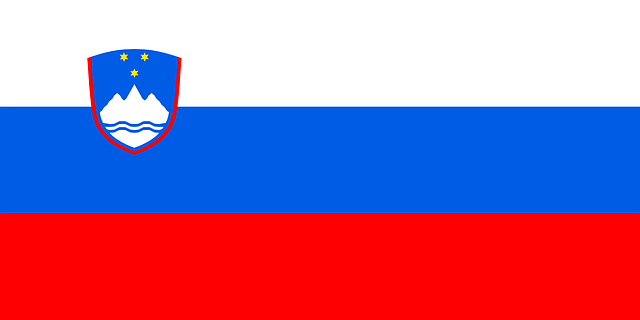

Slovenia (/sloʊˈviːniə, slə-/ (About this sound listen) sloh-VEE-nee-ə; Slovene: Slovenija [slɔˈʋèːnija]), officially the Republic of Slovenia (Slovene: About this sound Republika Slovenija (help·info), abbr.: RS), is a sovereign state located in southern Central Europe at a crossroads of important European cultural and trade routes. It is bordered by Italy to the west, Austria to the north, Hungary to the northeast, Croatia to the southeast, and the Adriatic Sea to the southwest.
Slovenia has historically been the crossroads of Slavic, Germanic, and Romance languages and cultures. Although the population is not homogeneous, Slovenes comprise the majority.The South Slavic language Slovene is the official language throughout the country. Slovenia is a largely secularized country, but Catholicism and Lutheranism have significantly influenced its culture and identity. The economy of Slovenia is small, open and export-oriented and has been strongly influenced by international conditions.It has been severely hurt by the Eurozone crisis which started in 2009.The main economic field is services, followed by industry and construction.
Natural regions:
Slovenia's name means the "Land of the Slavs" in Slovene and other South Slavic languages. The etymology of Slav itself remains uncertain.
Ethnic groups: